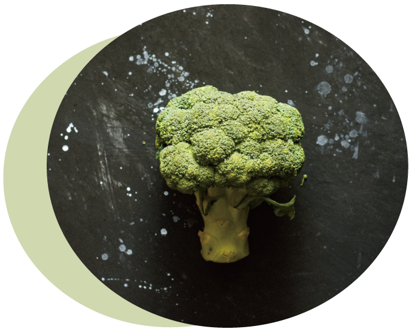
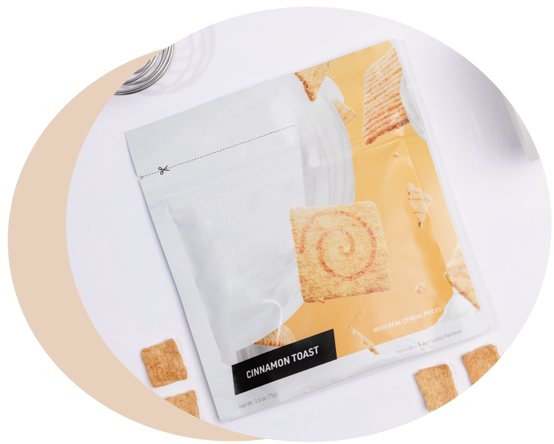
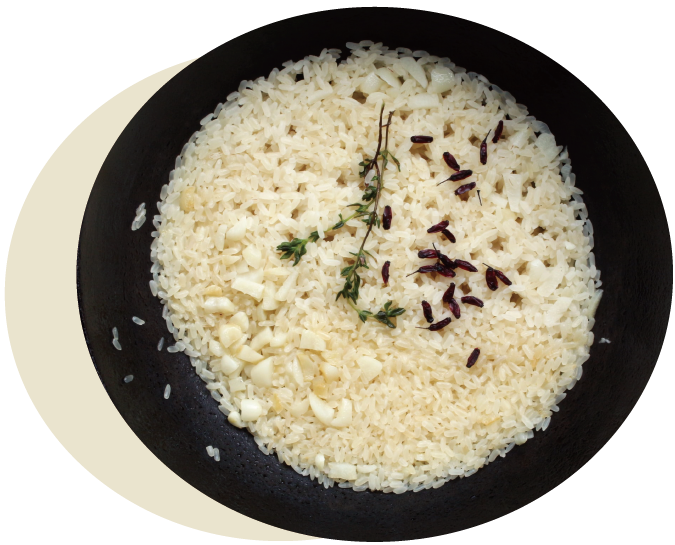
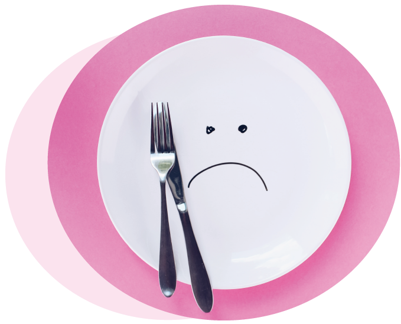

我很努力吃素，但是怎麼瘦不下來？
-
為了讓口感更加美味，素食在烹調時常會加入較多的油脂、糖、鹽，並使用油炸、油煎或糖醋的方式進行烹調，且素食加工食品(如素肉、素丸子等)熱量高，建議吃素多選天然食材、多吃深色蔬菜及水果。

我都靠吃代餐減肥欸，不對嗎？
-
代餐營養不均衡、單調且膳食纖維不足，長期食用代餐可能有營養不良的問題，若沒有改變舊有飲食習慣，停止使用代餐後容易復胖，花了錢又傷身體。提醒大家均衡飲食、規律運動、多喝白開水，才是健康減重的不二法門喔！

為了減肥，我都不吃澱粉類食物？
-
未精製的澱粉類 (如：如糙米、胚芽、燕麥) 富含維生素及膳食纖維，可增加飽足感、促進腸胃蠕動，有助於血糖以及體重控制，適量攝取可幫助脂肪燃燒。無論是吃或不吃某一類食物，都容易導致營養不均衡，造成身體的負擔。

因為想快速減肥，我會不吃東西？
-
禁食易傷身、降低代謝率，且可能在下一餐過量進食。禁食會造成各種重要營養素缺乏，使體重下降過快、肌肉流失，代謝率下降，可能造成腎臟及腦部的損傷，建議大家養成三餐定時定量、多喝白開水不喝含糖飲料、不吃宵夜的好習慣喔！